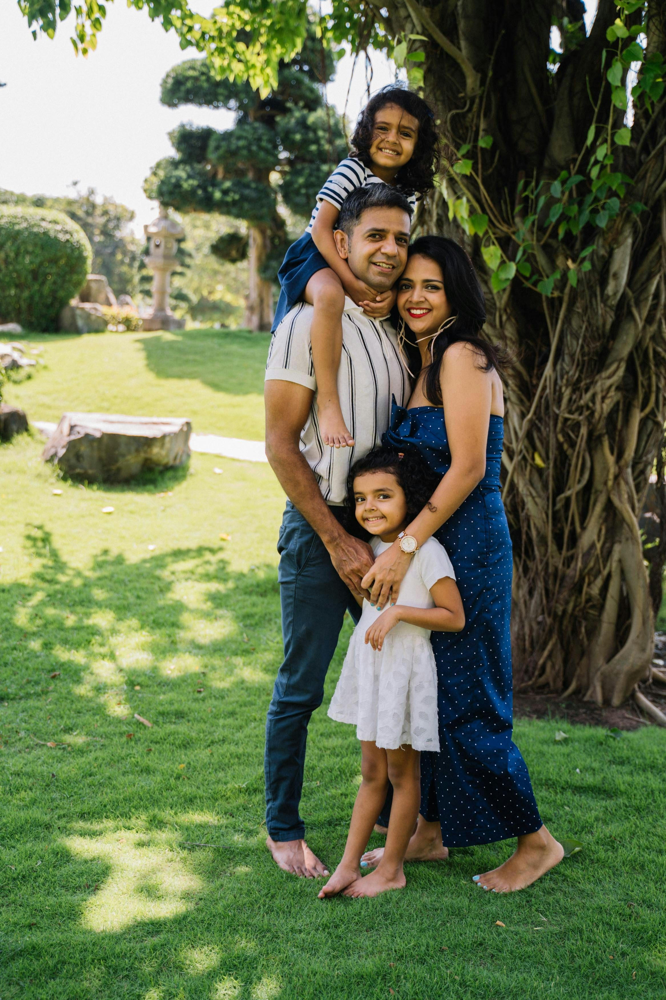

Meet our founders, the Desmond's
Our Family
The Desmond's are a nature-loving family Who have had the fortune of calling Big Sur their home for the better part of the last decade. Wishing to share the beauty of this incredible place with others, they founded Pacific Trails Resort.

Our Mission
In order to encourage a deeper connection with nature and promote sustainable tourism, we are committed to providing an exceptional experience that respects the environment and supports the local community.

Frequently Asked Questions
What activities are available?
We offer a variety of outdoor activities including hiking, bird watching, and nature photography. Visit our Activities Page for more details!
What is the cancellation policy?
We offer full refunds for cancellations made at least 48 hours before the scheduled arrival.
Are pets allowed?
Yes, common household pets, such as dogs or cats, are allowed in designated areas of the resort. Please contact us for more information regarding pet policies and guidelines.
Is there Wi-Fi available?
Yes, Wi-Fi is available in all guest rooms and common areas of the resort. However, Wi-Fi and cell service may be limited in certain areas of the resort.
What is the check-in time?
Check-in time is at 3:00 PM. Early check-in may be available for an additional fee.
How do I make a reservation?
You can make a reservation by visiting our Reservations Page and filling out the simple form! You can also reserve by calling us at 888-555-5555.
12010 Pacific Trails Road
Zephyr, Ca 95555
888-555-5555